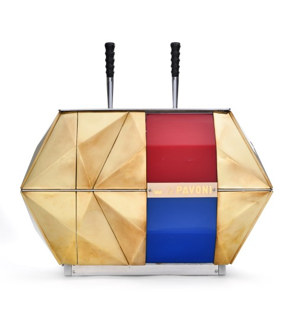

EMIL SCHUMACHER
UND DIE FORM SEINER ZEIT
Die neue Ausstellung des Emil Schumacher Museums unter dem Titel „Emil Schumacher und die Form seiner Zeit“ repräsentiert das internationale Design des gesamten 20. Jahrhunderts anhand herausragender Entwürfe von Peter Behrens, Mario Botta, Marcel Breuer, Arne Jacobsen, Vico Magistretti, Enzo Mari, Bruno Munari, Verner Panton, Ettore Sottsass, Dante della Torre, Marcel Wanders und vielen Weiteren.
UND DIE FORM SEINER ZEIT
Abseits der allgegenwärtigen Klassiker, wie dem heute besonders populären Lounge Chair von Ray und Charles Eames oder der ikonischen Liege von Le Corbusier, bietet die Ausstellung im Zusammenklang von Malerei, Bildhauerei und Design eine neue Perspektive. Zahlreiche Entwürfe der Midcentury-Moderne, die sich im Hagener Wohnhaus des Künstlers erhalten haben, stifteten die erste Anregung für das Konzept zur Ausstellung.
Der Maler Emil Schumacher hatte ein ganz besonderes Interesse an Formen aller Art, die immer wieder seine Aufmerksamkeit fesselten. Er entdeckte sie etwa in Treibholz an den Stränden Ibizas ebenso wie in Überresten von Kartoffelkraut auf einem Acker in der Umgebung von Hagen. Selbstverständlich spiegelte sich der künstlerische Blick auch im Wohnhaus und seiner unmittelbaren, privaten Umgebung wider, die er sich gemeinsam mit seiner Frau Ulla schuf. Schon in der Zeit der ersten großen Erfolge, Anfang der 1950er-Jahre, erwarb Schumacher Möbel für die eigene Einrichtung, deren klare Formen schon damals als Danish Design Furore machten. Er entdeckte diese Möbel in Kunstausstellungen, wie 1952 „Mensch und Form unserer Zeit“ in der Kunsthalle Recklinghausen, an denen er selbst als Maler beteiligt war.
Nur wenige Jahre später hatte Schumacher durch zahlreiche Ausstellungen auch intensiven Kontakt zu italienischen Kunsthändlern und Sammlern, in deren Häusern er mit italienischem Design der Zeit konfrontiert wurde. Auch italienische Architektur-Zeitschriften, wie etwa die von Gio Ponti gegründete Domus der 1950er-Jahre finden sich in der Bibliothek des Künstlers und belegen sein Interesse an der freien, spielerischen Formensprache Italiens.
Die Ausstellung entstand in Kooperation mit Sebastian Jacobi aus Bad Ems, einem der bedeutendsten Designhistoriker sowie -sammler der Gegenwart in Deutschland. Bisher noch nie museal präsentierte Leihgaben aus seiner Sammlung werden Gemälden und Plastiken sowie Objekten der Angewandten Kunst aus den Hagener Museen gegenübergestellt. Der Rundgang beginnt mit einem Klingelschild von Peter Behrens, symbolisch für den Hagener Impuls von Karl Ernst Osthaus am Anfang des 20. Jahrhunderts, und führt bis an das Ende des Jahrhunderts, repräsentiert durch den ‚Knotted Chair’ von Marcel Wanders..
Podc

Emil Schumacher
und die Form seiner Zeit
24. April
verlängert bis 28. August 2022